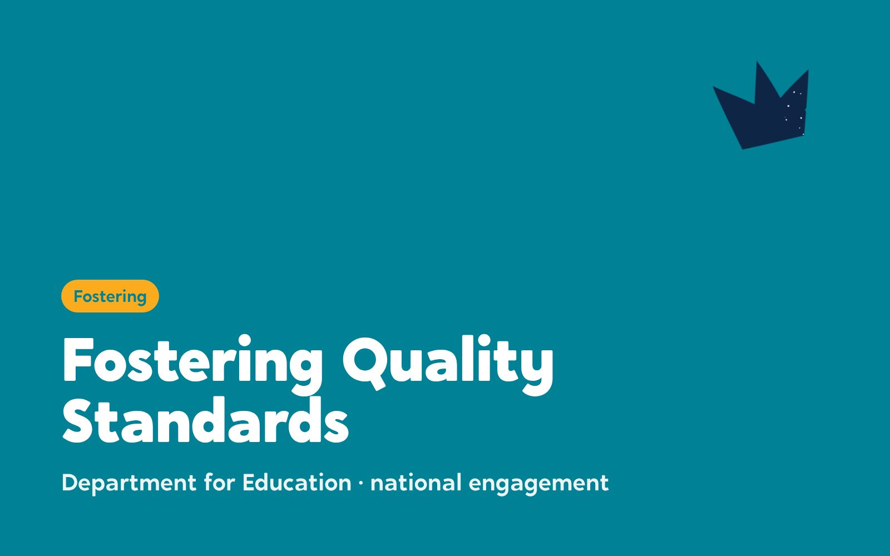

Turn people who want to foster into confident carers who stay
The Care Leaders and Why Care work together for councils. Why Care finds where your service loses people, gets applicants ready for panel and supports every new carer through their first year. We help your service change around it, and put the new national standards into practice.

What is fostering consultancy?
Fostering consultancy helps councils find, assess and keep foster carers. With Why Care, we look at where your service loses people and fix it, from first enquiry to the end of a carer’s first year.

The problem is not interest. It is what happens next.
Most people who apply to foster withdraw before panel, and more households leave fostering each year than join it.
Sources: Ofsted, Fostering in England 2024-25 and 2021-22.
What we each bring
Two companies, two sets of skills, one plan for your service. Both bring first-hand experience of care alongside professional experience in social work, policy and service change.
The Care Leaders brings change
- Strategy, service design and making change stick
- Putting the new national fostering standards into practice across a service or a regional hub
- Hearing from foster carers, children and staff before anything changes
- Training for carers and social workers on writing and reading about children
- Leadership of the national engagement on the new standards, for the Department for Education
Why Care brings fostering
- Why Care Diagnostic: where your service loses applicants and carers, and how to fix it
- Why Care Assessment: applicants ready for panel in around 4 months
- First Year Support: a Fostering Mentor for every new carer
- Practice scenarios co-designed by care-experienced young people
- Led the development of the new national fostering standards for the Department for Education
Good to know: Why Care delivers and contracts all fostering diagnostic, assessment and first year support work.

The Why Care offer
Three services that follow a carer from first enquiry to the end of their first year.
We find where your service loses applicants and carers, and show you how to fix it.
- An 8-day review, from first enquiry to the end of a carer’s first year
- Application, assessment, panel, first-year support, recruitment and your systems
- A report, a stability and retention heatmap, quick wins and longer-term changes
- Delivered within three weeks of fieldwork, with no obligation to take anything further
Applicants ready for panel in around 4 months, with less paperwork for your social workers.
- Applicants go through assessment together, in small groups
- Applicants and their social worker share one digital assessment and see the same progress
- Practice scenarios co-designed by care-experienced young people
- In Durham, applicants were ready for panel in around 4 months
New carers are never on their own in the year they need it most.
- A Fostering Mentor, an experienced foster carer, for every new carer
- 4 training days in the first year
- Group supervision with other new carers

How it works with Why Care
From the first call to the end of a carer’s first year. You can stop after the Diagnostic: its improvement plan is yours to act on, with or without Why Care.
- 1A conversation
A free call about your fostering service, with no commitment.
- 2Self-assessment
Five minutes for your team. It lets Why Care come back with a clear scope, cost and timeline.
- 3The Diagnostic
8 days of data, interviews, workshops and document review. Your report arrives within three weeks of fieldwork.
- 4The Assessment
Applicants go through the Why Care Assessment in small groups, ready for panel in around 4 months.
- 5Your panel decides
Your fostering panel makes the decision. Why Care prepares applicants and never promises approval.
- 6First Year Support
Every new carer gets a Fostering Mentor, 4 training days and group supervision.

Putting the new standards into practice
The new national fostering standards ask services to work in new ways. We help fostering services and regional hubs plan the change and make it stick.
We know these standards from the inside. Niketa Sanderson-Gillard, founder of Why Care, was the lead drafter of the new standards for the Department for Education. Luke Rodgers BEM was the engagement lead, working with councils, independent fostering agencies and partner organisations.
- Plan how your service or regional hub will meet the new standards
- Roadmaps and governance for whole-service change
- Hear from foster carers, children and staff before you change anything
- Training on recording and profiles, mapped to the standards


Previous work
Case studies from Durham and Newham will follow once Why Care has run there.

Questions commissioners ask
Why have The Care Leaders and Why Care partnered?
Because improving fostering takes two sets of skills at once. The new standards ask services to change how they work, which is transformation. Doing it well means finding, assessing and keeping the right carers, which is fostering. We bring the first and Why Care brings the second, so neither company pretends to do the other’s job.
Are they the same company?
No. They’re separate companies. Why Care delivers and contracts all fostering diagnostic, assessment and first year support work.
Have you worked together before?
Yes, on the new national fostering standards. Why Care led the development of the standards for the Department for Education, and Luke Rodgers BEM led the national engagement with councils, independent fostering agencies and partner organisations.
Does Why Care approve foster carers?
No. Your fostering panel and agency decision maker approve carers. Why Care gets applicants ready for panel and never promises approval.
Do we have to commission everything?
No. Most services start with the Diagnostic. Its improvement plan is yours to act on yourselves, or you can commission Why Care to deliver parts of it.
What does it cost?
It depends on the size of your service. A short self-assessment lets Why Care give you a clear scope, cost and timeline before you decide. Contact us for a price.
Who do you involve?
Your leaders and staff, your foster carers and applicants, and the children and young people who live with the result. Care-experienced young people co-design the practice scenarios in the Why Care Assessment.
How do we buy from you?
Smaller pieces are usually a direct award or a quote. Larger pieces may go to tender, and we’re happy to talk before you write the specification.